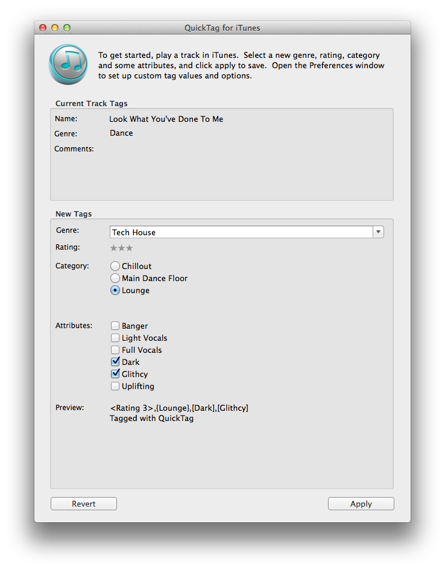

Main Window
The primary activities for QuickTag are handled in the main window:

- Current Track Tags: After playing a track in iTunes, the current track tag values for Name, Genre and Comments are displayed here.
- New Tags: This section is where you can select the new values for a track:
- Genre: Select the genre
- Rating: Click on the number of rating stars
- Category: Select the category for the track (one selectable at a time)
- Attributes: Select attributes for the track (as many as you like)
- Preview: Display what the new "Comments" ID3 tag will look like.
- Apply: Apply the selected changes to the selected track in iTunes
- Revert: Revert track tags to the previous values.